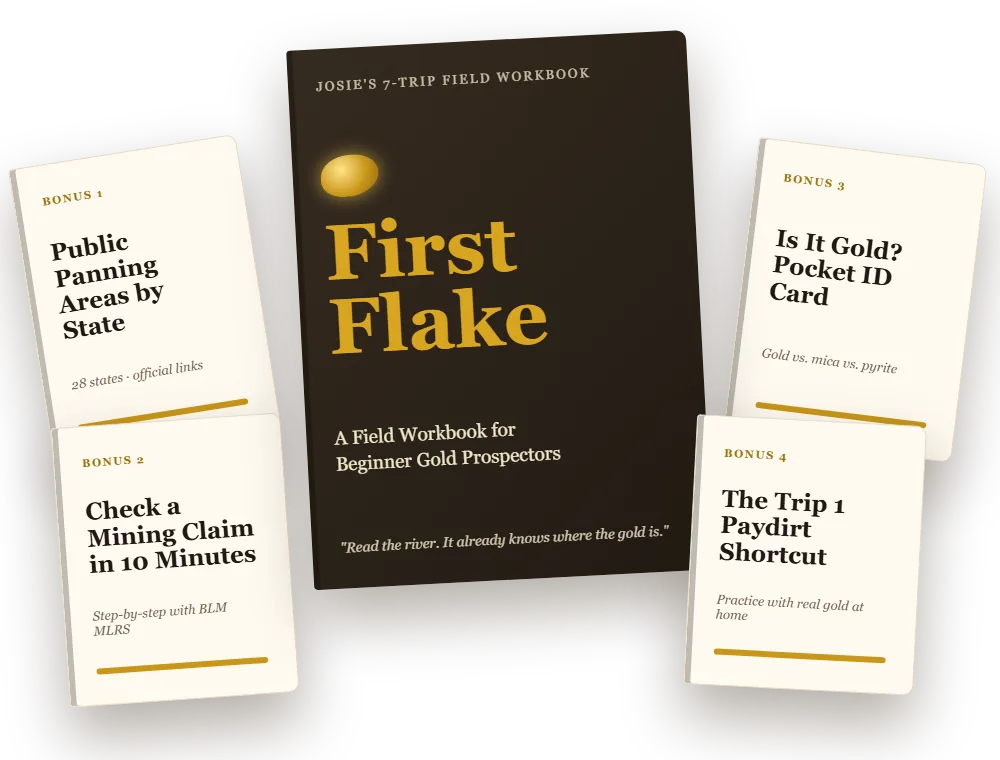
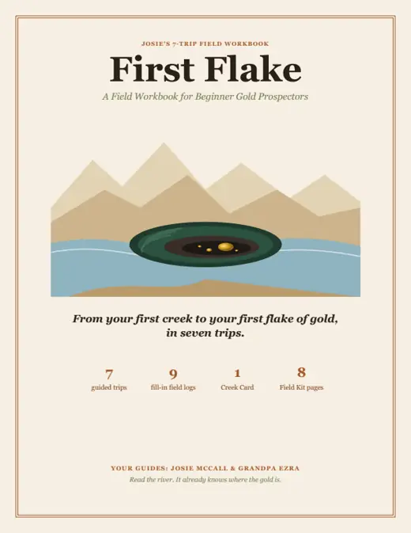
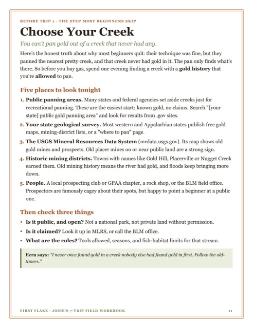
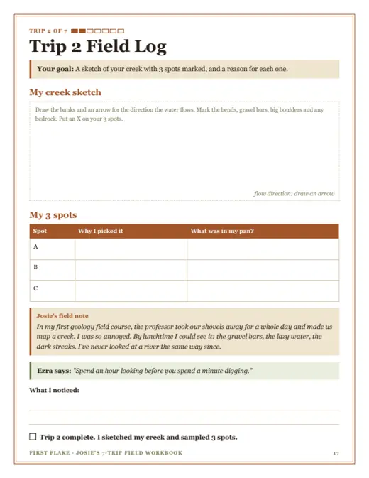
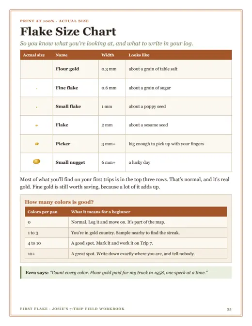

From your first creek to your first flake of gold, in seven trips.
Finding gold isn't luck. It's reading. Rivers sort their gravel the same way every time. This workbook teaches you the pattern, one weekend trip at a time, so you stop digging at random and start digging where the river already put the gold.
And the first time a flake glows in the bottom of your pan? You'll yell. Everyone yells.
Get the Workbook + 4 Bonuses — $9Instant PDF download · 41 pages + 4 bonus guides · Printable or fill in on your tablet

Built from BLM, U.S. Forest Service, USGS and state geological survey guidance, and organized around the questions beginners ask most.
Sound familiar?
You bought a gold pan. Maybe it's still in the plastic. Maybe you drove two hours, washed a whole afternoon of gravel back into the creek, and went home with sore knees and nothing to show for it. Or you haven't bought one yet, and you'd rather not waste a weekend finding out the hard way.
You picked the wrong creek
The number one reason beginners quit: they pan a pretty creek that never had gold. Choose Your Creek fixes that before you leave the house.
You dig at random
Every spot looks the same, so you hop around hoping. Trips 2 and 6 teach you where the river drops gold, and how to prove it with a sample line.
You wash your gold away
Pan like you're stirring soup and the flakes go straight back into the water. Trip 1 fixes your motion at home, with BBs you can count.
You're not sure it's legal
Claims, BLM land, state rules. Bonuses 1 and 2 show you where you're allowed to pan, and how to check for claims in 10 minutes.
Seven trips. One skill each.
Most people do one trip per weekend, so about two months. Each trip has one rule to remember and a log page to fill in.
The Tub Rehearsal
Lose it at home, so you never lose it in the river. Learn the panning motion with BBs before you ever touch a creek.
Read the River
Gold stops where the water gets lazy. Inside bends, gravel bars, boulders, black sand.
Down to Bedrock
Gold sinks until it can't. Find and clean out the cracks that trap it.
Classify & Concentrate
Move more dirt, not faster hands. Screen, bucket, and save your concentrates.
Black Sand School
Where there's black sand, gold isn't far. Find the yellow tail and snuff every flake.
The Sample Line
One pan is a guess. Ten pans are a map. Let the numbers point you to the spot.
First Flake Day
Go back to your best spot, and stay there. Run the three tests. Take the photo.
See the real pages
These are actual pages from the workbook, not mockups. Print them, or type straight into all 250 fields on a tablet or computer.




- Getting ready: the science in one page, safety and permission basics, and an illustrated guide to holding a pan.
- After your first flake: what your gold is worth, how to weigh and store it, and where to go next.
- Field Kit: the Creek Card, a gear and shopping list with real prices, Why Is My Pan Empty? troubleshooting, a glossary, and a One-Day Plan.
Plus 4 bonus guides for the questions every beginner asks
The workbook teaches you to read a river. The bonuses tell you where to go, whether it's legal, and whether what's in your pan is real.
Bonus 1: Public Panning Areas by State
Officially open panning spots in 28 states, the rules for each, and the official agency link to check before you go.
Bonus 2: How to Check a Mining Claim in 10 Minutes
A plain-English walkthrough of the BLM's free claim database, so you never pan on someone else's claim by accident.
Bonus 3: Is It Gold? Pocket ID Card
Gold vs. mica vs. pyrite on one printable card, with the three 30-second tests.
Bonus 4: The Trip 1 Paydirt Shortcut
Practice with real, guaranteed gold at your kitchen table, and know your technique is river-ready.
Everything you get today
Less than the gas for one wasted trip to the wrong creek.
Get the Workbook + 4 Bonuses — $9- Pay with PayPal or any card. No account needed.
- Your download page opens instantly.
- The link is emailed to you too. Start Trip 1 this weekend.
🔒 Secure checkout by PayPal · Digital product, all sales final
Who this is for
✓ Perfect if you
Bought a gold pan and never found anything · Want a weekend hobby with the kids or grandkids · Like a plan with steps and a notebook · Live near a creek, or are happy to practice at home first
✗ Not for you if you
Want to get rich · Already run a sluice or dredge every weekend · Need a physical book shipped to you · Want a guide to one specific creek
A great gift for the outdoors person who has everything
Grandparents, dads, scout leaders, and the kid who won't stop talking about gold. Buy it today, forward the download email, and tuck the printed Creek Card into a $15 gold pan with a bow. Nothing to ship, and Trip 1 works in a backyard tub.
Questions
Will I actually find gold?
Nobody can promise that, and you should be wary of anyone who does. What this workbook does is give you the best odds: a creek with real gold history, the right spots in it, and a technique that doesn't wash the gold away. And be honest with yourself: most of what you'll find is flakes smaller than a sesame seed. You're not going to get rich. You're going to learn a skill, spend weekends outside, and yell when the first flake shows up.
Is this a physical book?
No. It's a set of PDFs you download right after payment: the workbook plus four bonus guides. Print it, or fill in the logs on a tablet or computer.
Do I need expensive gear?
No. A gold pan, a plastic tub and a few steel BBs get you through Trip 1. The shopping list inside shows you can start for about $60.
Can I do this without a creek nearby?
Yes. Trips 1, 4 and 5 work at home with a bag of paydirt, and Bonus 1 lists public panning areas in 28 states for when you're ready to travel.
Who are Josie and Ezra?
Your guides. They're fictional characters, written (with help from AI) so the workbook feels like a friend teaching you at the creek, not a textbook. Everything they teach is real: the geology, the techniques and the safety advice come from BLM, Forest Service, USGS and state agency guidance. Rules change, so always double-check with your local BLM office or state agency before you dig.
Can I buy it as a gift?
Yes. Buy it with your own email, then forward the download email to them. The links work for 7 days, and we'll send fresh ones any time.
What if the download doesn't work?
Email hello@firstflake.com and we'll send fresh links, usually the same day.
"I went forty days without a single flake in 1949. Day forty-one paid for every one of them."
Grandpa Ezra, from the margins of the workbook
Grab your pan. Let's go read a river.
41-page workbook + 4 bonus guides · Instant download
Get the Workbook + 4 Bonuses — $9